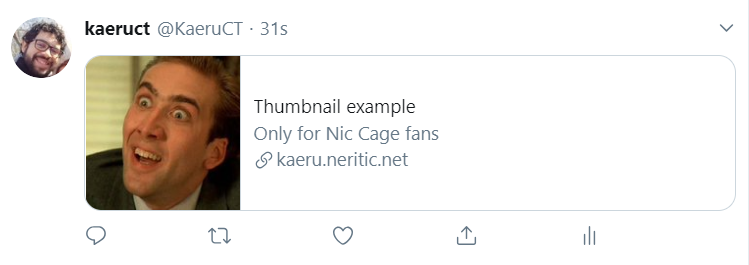
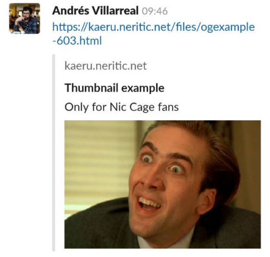
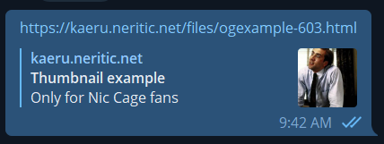

Pejibaye Blog
Pejibaye Blog
How to show preview images when sharing links of your website
When you share a link on social media or mesagging apps, sometimes the app shows a nice preview thumbnail with a description? You can click on it and it will take you to the linked website. I wanted to have this functionality for a website I was working on, so I did some research on how to get it working.
Short answer: use the og:image meta tag.
Longer answer: read on.
You have to use Open Graph meta tags. There's a bunch of meta tags to use, but the ones you need for previews are the following:
<meta name="twitter:card" content="summary"> <meta property="og:title" content="Thumbnail example"> <meta property="og:description" content="Only for Nic Cage fans"> <meta property="og:image" content="https://www.placecage.com/c/460/300"> <meta property="og:url" content="https://kaeruct.github.io/">
When a website with the previous tags is shared on social media, you will get a nice preview card with thumbnail, title, and description.
Important points:
- You NEED to include the
twitter:cardmeta tag for Twitter to display the preview. Otherwise it won't work. If you don't care about Twitter you can remove it. - Some apps/websites will not include your preview thumbnail if it's not served via HTTPS. So make sure the image URLs always start with
https://! - The
og:urlvalue should point to the canonical URL of the page, not to the root of your website.
Below you can see some examples:

Slack

Telegram

Comments
Comments powered by Disqus